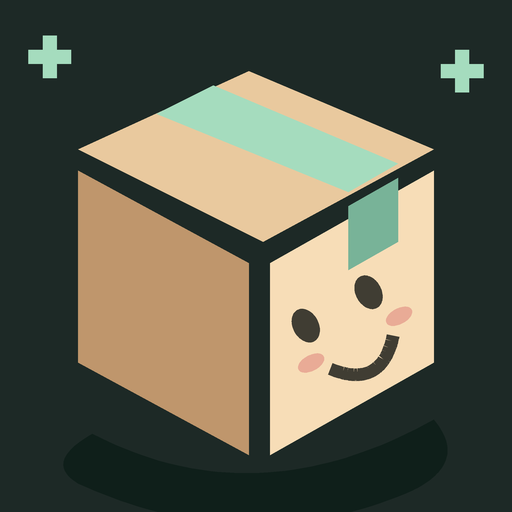

Політика конфіденційності
Updated: 31 October 2026🌐 Language / Язык
1. Для чого використовуються дані
Програма використовує вибрані вами фотографії або фотографії, зроблені за вашою командою, для вимірювання предмета. Розрахунок виконується на пристрої. Розробник не отримує фотографії, розміри, вага або інші введені значення через програму.
2. Фотографії та камера
Зйомка відкривається лише після натискання «Зробити фото» через встановлену програму камери. Вибір файлу відчиняє системне вікно; програма не просить доступ до всієї галереї. Використовуються зображення та його орієнтація. Програма не використовує координати GPS з метаданих для розташування.
3. Зберігання на пристрої
Зменшені робочі копії знімків зберігаються у закритому кеші програми. Вони можуть зберігатися після закриття екрана до нової сесії вимірювання, очищення тимчасових фотографій або очищення системою кешу. Незавершені знімки камери також можуть залишитися в кеші до чищення. Останні введені розміри та налаштування зберігаються у закритому сховищі програми. Автоматичне резервне копіювання цих даних вимкнено в установках програми.
4. Передача даних
У додатку немає реклами, аналітики, серверної обробки та дозволу INTERNET. Вбудовані бібліотеки AndroidX, Kotlin та Guava використовуються для роботи програми, а не для реклами чи аналітики. Додаток не надсилає дані користувача розробнику і не продає їх.
За збереження PDF ви самі вибираєте місце через системне вікно Android. Якщо вибрано хмарний диск, файл обробляється постачальником цього сховища за його правилами. PDF містить схему та розміри коробки, а не вихідні фотографії. Системна камера, файловий провайдер, Google Play та інші окремі служби можуть мати власні правила обробки даних.
5. Видалення
Кнопка «Видалити тимчасові фотографії» на цьому екрані видаляє лише робочі фотографії програми. Оригінали з галереї та збережені вами PDF залишаються на місці. Налаштування та розміри можна видалити через системну дію «Очистити дані» для програми або видалити саму програму. Фотографії, PDF та копії, збережені поза програмою, видаляються окремо у вибраному сховищі.
6. Облікові записи та звернення
У додатку немає реєстрації та облікових записів користувача. Для роботи не потрібно повідомляти ім'я, телефон чи email. Якщо ви самостійно звертаєтесь на підтримку контакту видавця, зміст звернення обробляється видавцем для відповіді за правилами його підтримки. Контакт видавця повинен бути вказаний у картці Google Play та на цьому екрані до публікації.
7. Зміни
Якщо з'являться серверні функції, реклама, аналітика або зміниться робота з даними, політика та відомості в Google Play мають бути оновлені до розповсюдження такої версії.